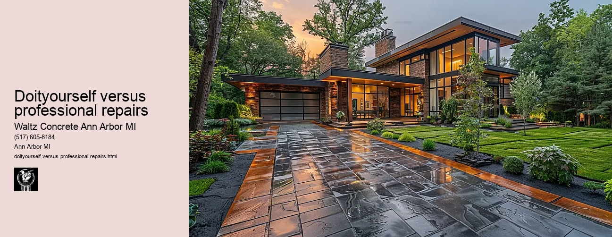

News
Concrete Driveway Installation Ann Arbor Mi
Concrete Driveway Installation Ann Arbor Mi
Choosing the right contractor for installation
Cost of concrete driveway installation in Ann Arbor
Permit requirements for driveway installation in Ann Arbor
The process and timeline of concrete driveway installation
Different types of concrete used in driveways
Maintenance and Repair of Concrete Driveways in Ann Arbor Mi
Maintenance and Repair of Concrete Driveways in Ann Arbor Mi
Preventive maintenance tips for durability
Common causes for concrete driveway damage
Professional companies offering repair services in Ann Arbor
Doityourself versus professional repairs
Costs associated with repairing a concrete driveway
Designs and Styles of Concrete Driveways in Ann Arbor Mi
Designs and Styles of Concrete Driveways in Ann Arbor Mi
Popular design trends for driveways
Considering climate factors when choosing a design or style
Unique customizations available for concrete driveways
Influence of home architecture on driveway design
Stamped stained and decorative options
Environmental Impact of Concrete Driveways in Ann Arbor Mi
Environmental Impact of Concrete Driveways in Ann Arbor Mi
Carbon footprint associated with concrete production
Use of sustainable materials in concrete driveways
Drainage considerations to reduce environmental impact
Local regulations regarding environmentally friendly driveways
Potential use of permeable or porous pavement
Alternatives to Concrete Driveways in Ann Arbor Mi
Alternatives to Concrete Driveways in Ann Arbor Mi
Asphalt driveways and their proscons
Paver stone driveways and their benefitsdrawbacks
Gravel or crushed stone as an alternative option
Comparing costs between different driveway materials
Resinbound surfaces as emerging technology
About Us
Contact Us

Doityourself versus professional repairs
Doityourself versus professional repairs
Title: Do-It-Yourself vs. Professional Repairs: A Comparative Analysis
In a world where YouTube and Google seem to have an answer for everything, the do-it-yourself (DIY) culture has grown exponentially. Many people are turning to DIY repairs for home improvements, cars, electronics, and other items in an attempt to save money. However, there are times when professional services prove to be invaluable. This essay will explore the pros and cons of both DIY and professional repairs.
Firstly, let's consider the advantages of DIY projects. The most significant benefit is undoubtedly cost savings. Professionals charge not only for their expertise but also for their time. By doing it yourself, you can save on labor costs significantly. In addition, DIY projects offer an opportunity to learn new skills and gain knowledge about how various things work around us.
However, DIY is not always the best route to take. It requires a substantial investment of time as well as effort which might not be feasible for everyone due to their busy schedules or lack of physical strength in cases involving heavy lifting or intricate tasks.
On the other hand, professional repairs come with several benefits that often justify their costs; chief among them being expertise and efficiency. Professionals have years of experience under their belt and can efficiently diagnose problems that may take amateurs hours or even days to figure out.
Moreover, professionals typically provide warranties on their work which means if anything goes wrong after the repair they would fix it at no extra charge - something that isn't usually possible with DIY repairs.
However, one cannot overlook the high costs associated with professional services which could be multiple times more than what a DIY project would cost.
One must also consider safety when deciding between DIY and hiring professionals; while minor tasks like painting walls or fixing light fixtures can easily be handled by most individuals without risk of injury or damage - tasks involving electricity or plumbing are better left off in hands of professionals who know how to handle such situations safely.
In conclusion, the choice between DIY and professional repairs depends on several factors including but not limited to cost, time, expertise and safety. If the task is simple, you have some understanding of it and enough time at hand then a DIY approach can save you money while providing an opportunity to learn new skills. However, for complex tasks that require specialized knowledge or pose safety risks - hiring professionals would be a wise decision despite higher costs.
Professional companies offering repair services in Ann Arbor
Doityourself versus professional repairs
Frequently Asked Questions
What are the advantages of repairing my concrete driveway myself in Ann Arbor, MI?
Doing it yourself can save you money on labor costs. It also gives you the opportunity to learn new skills and have control over the projects timeline. However, it requires time and effort from you.
When should I consider hiring a professional for concrete driveway repair in Ann Arbor, MI?
You should consider hiring a professional when the damage is extensive or complicated - such as large cracks or foundation issues - which require specialized tools and expertise. Also if you dont have enough time or physical ability to do it yourself.
How can I find a reliable professional for concrete driveway repair in Ann Arbor, MI?
Check online reviews and ratings for local contractors. Ask friends or family members for recommendations. Request quotes from multiple contractors to compare prices. Always make sure theyre licensed and insured before making your final decision.
Doityourself versus professional repairs